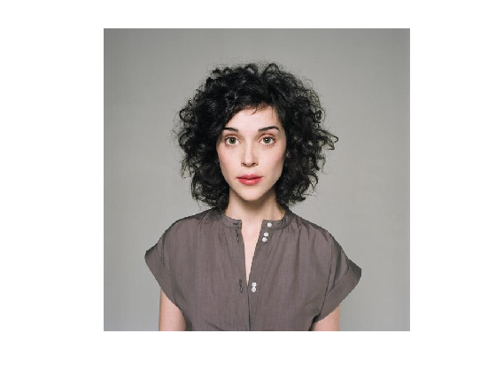

Contents
% Andrew Gerst - Assignment 3 Bonus clear all; close all;
Display Image
img = imread('clark.jpg'); figure image(img); axis off axis image
User Click 10 Points
[x,y] = ginput(10);
Draw 10 Points (No Lines) On Image
hold on plot(x,y,'y.'); one = ones(size(x)); zero = zeros(size(x));
Draw Plotted Circle (Cyan)
% Circle: (x^2 + y^2) + Dx + Fy + G = 0 % draw_ellipse(1,0,1,d,f,g,'c'); circle = [one y x y.^2+x.^2]; est = circle\y; draw_ellipse(1,0,1,est(1),est(2),est(3),'c');
Draw Oval (Red)
% Oval: x^2 + Cy^2 + Dx + Fy + G = 0 % draw_ellipse(1,0,c,d,f,g,'c');
Draw Ellipse (Magenta)
% Ellipse: x^2 + Bxy + Cy^2 + Dx + Fy + G = 0 % draw_ellipse(1,B,C,D,F,G,eColor);
Squared Residual For Each Shape
% plug x and y into each of the three shape equations % sum squares of the results